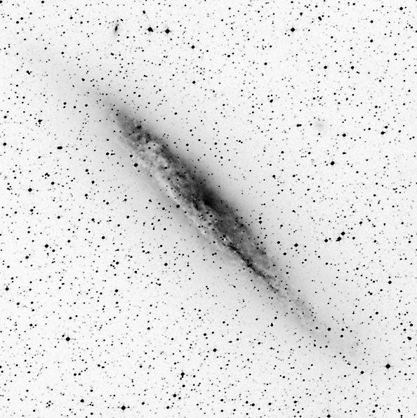
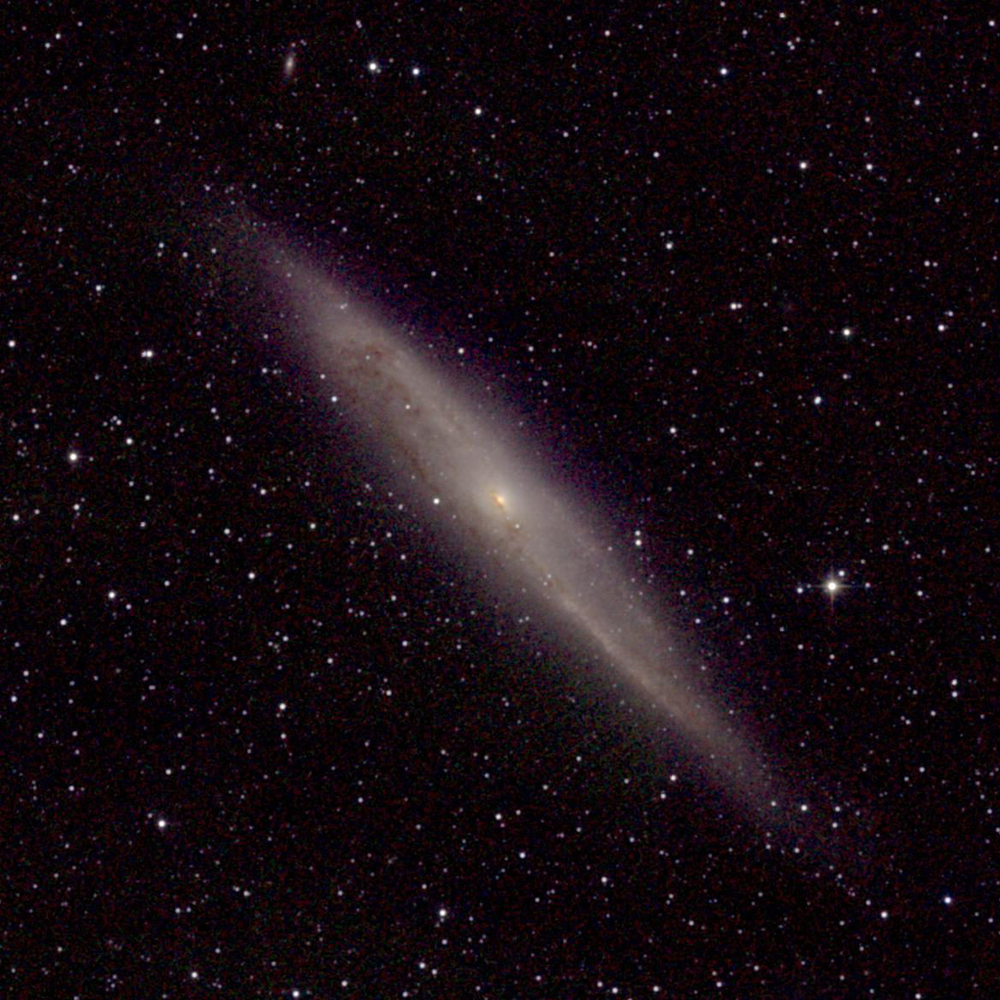

NGC 4945
NGC 4945 is a Seyfert 2 galaxy with a nuclear starburst. Notice how much easier it is to see the nucleus through the dust in the infrared image on the right.
Negative image from Palomar Digital Sky Survey.
Infrared (JHK) composite from IPAC 2MASS* survey.


*2MASS = 2 Micron All Sky Survey